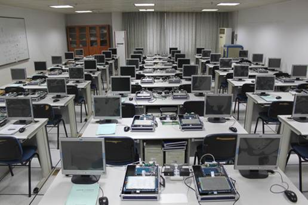
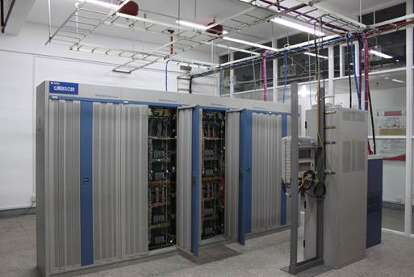
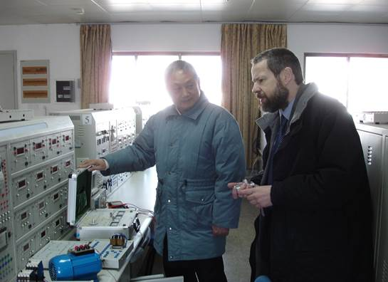
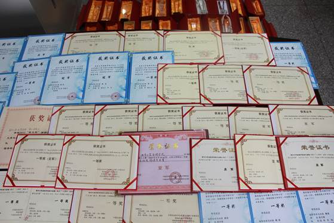
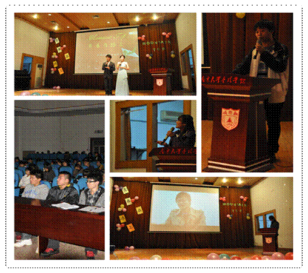
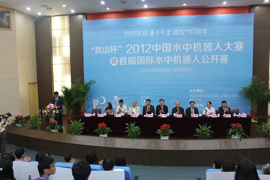
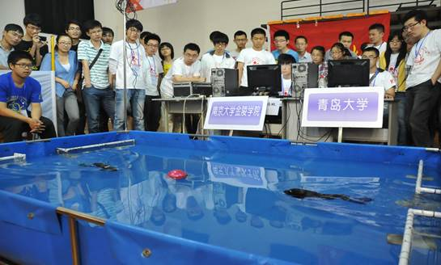
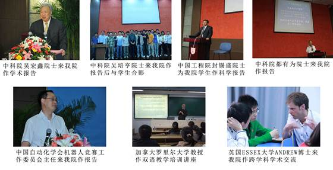
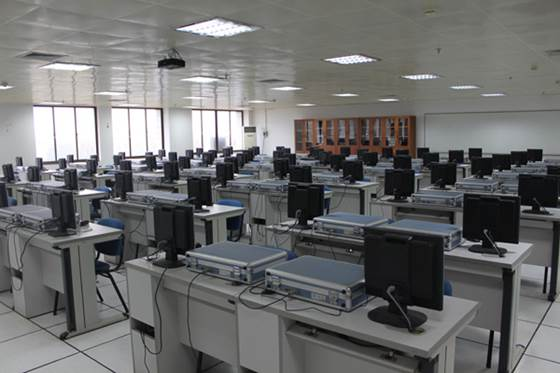
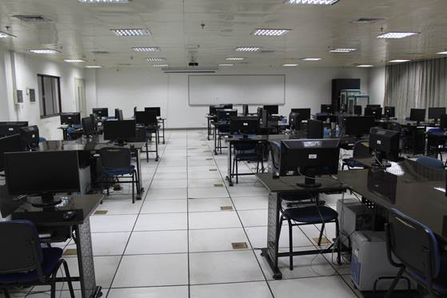

信息科学与工程学院
南京大学金陵学院信息科学与工程学院成立于2008 年9 月，由原计算机科学与技术系、电子信息科学与技术系及信息管理系三个系合并而成。目前设有电子信息科学与技术专业、通信工程专业、计算机科学与技术专业、信息管理与信息系统专业、软件工程专业共计5个专业，每个专业下设若干培养方向。目前在校本科生1700 余人。
信息科学与工程学院以培养应用型、创业型本科人才为目标，依托南京大学相关专业，在结合自身办学特色的基础上，将学院所辖专业有机融合，师资力量雄厚，现有副教授及以上教师46 人，青年讲师21人。目前建成有特色、设备先进的教学实验室六个：电工电子实验教学中心（含模拟电路实验室、数字电路实验室、电子电路CAD 实验室、电子技术综合实验室、通信实验室、电工实验室）、普通物理实验室（含光学实验室、力学实验室、电学实验室、磁学实验室）、计算机科学与技术专业实验室（含嵌入式系统实验室、计算机组成原理实验室、多媒体技术实验室、微处理器与应用实验室、信息管理实验室）、机器人实验室、大学计算机基础实验中心和现代通信技术实验室。

嵌入式系统实验室

现代通信技术实验室
在人才培养方面，学院特色包括：1、以分流培养为主模式:设立暑期学校，在培养应用型人才为主流的基础上，注重对一部分可深造的学生进行分流培养，以期有15%~20%的学生能考取研究生，一部分实验实训课程放在暑期学校开设。2、外语教学四年一贯制:大学一、二年级以四六级英语为目标进行教学，三四年级以口语、二外、职业技能为目标进行教学；3、大部分专业采用3+1 模式:用三年的时间学完4年的课程，（包括暑期学校的学习），用1 年的时间到工厂、企业、研究所、公司进行实习实训；4、创新、创业实践园基地:以产、学、研模式，以项目带动学习的模式培养为地方经济服务的应用型人才；5、国际合作教学模式:在已有的2+2 国际教学模式的基础上进一步开展3.5+1.5 模式（3.5 年本科在金陵学院、1.5 年硕士在英国Essex 大学）。

Essex大学Same教授访问电子电工实验室
几年来，信息科学与工程学院在教学、科研和人才培养方面取得了较好的成绩，先后有400 余人考取研究生，其中大部分是考取南京大学对口的相关专业，有70 余人出国深造，其中连续两年有人进入Imperial College（在2009 年，该校在泰晤士教育增刊世界大学排名中位居第五）深造。为培养应用型人才，计算机软件专业方面开展“3+1”培养模式，先后与国电南瑞科技股份有限公司、焦点科技股份有限公司、上海宝信软件股份有限公司等公司签订实习实训基地协议，每年都安排一定数量的学生到上述公司实习，实习表现优秀并且个人有意愿留下的，毕业后都可以和实习公司签订劳动合同实现就业。2011 年，学院还申请成为了江苏省计算机软件业外包人才培养基地。在2010 年江苏省独立学院计算机科学与技术专业评估中，8 项一级指标、20 项二级指标获得全A 通过，名列江苏省独立学院第一。2013年学院承办了第五届全国独立学院暨民办高校计算机系主任论坛，这也是论坛成立以来首次在江苏举行，极大地提高了学院的知名度与美誉度。
学院学生活动丰富多彩，各类活动在丰富学生校园生活的同时，也极大提高了学生的各项能力。学院学风优良，学生学习成绩突出，在2013年，共有43位学生获得了国家级奖学金，近400名学生获得了各类其它奖学金。其中学生刘乃郡荣获“南京大学优秀共产党员”荣誉称号，他是南京大学及金陵学院中获得该荣誉称号的唯一一个本科生。

学生参加各类比赛获奖证书及奖杯

丰富多彩的学生活动
为增强学生的实际动手能力，信息科学与工程学院智能机器人实验室先后五次组织学生参加robocup 中国机器人大赛，并取得13 个冠军、25 个亚军的优异成绩。在2012 年5月南京大学110 周年校庆之际，承办了“昆山杯”首届国际水中机器人大赛，参加此次比赛的有美国的西点军校、北京大学等国际著名高校。

我院承办的2012中国水中机器人大赛

我院代表队在比赛
依托南京大学的优质资源和学生良好的学习氛围，自2009年起，学院考取南京大学等著名高校研究生平均录取率达到15%以上。 四年级毕业生连续多年获得江苏省高校本科优秀毕业论文表彰，累计获得二等奖2次，三等奖1次，成绩显著，在全省高校名列前茅。同时，学院注重学生培养与国际接轨，定期聘请国际知名大学教授、院士到我院讲学，部分课程采用英文教材，双语教学。通过采取这些举措进一步开阔了学生的视眼，为培养应用型、国际化的高端专业人才奠定了基础。

学术交流活动活跃
电子信息科学与技术专业（按电子类招生，三、四年级分方向培养）
该专业旨在培养学生具有较强的电子设计能力，系统掌握专业知识，具有较强的观察、分析和解决问题的能力及逻辑思维能力，具有较强的运算、设计、测试和分析等技能。学生在校期间将受到严格的科学实验和科学研究的训练，了解专业及有关边缘学科的新发展和应用前景，具有向相邻学科发展的必要基础和适应新技术发展的能力。本专业的目的是培养能够在嵌入式技术与应用、射频技术与应用、电路与系统、工业自动化等领域从事科学研究、新品开发和科技管理工作的应用型人才。
电子信息科学与技术专业嵌入式技术与应用方向
嵌入式技术与应用方向依托南京大学电子科学与工程学院电路与系统学科，教学与研究内容涉及电子信息类多学科交叉，主要研究成像技术与智能识别，视频显示及处理，3D扫描技术研究与现实增强，近场图像处理，嵌入式操作系统及嵌入式手持设备应用软件开发，无线自组织网络及无线传感器网络算法与设备，智能机器人，物联网传感器网络路由技术，高安全度生物特征身份识别等最新的IT技术。
电子信息科学与技术专业射频技术与应用方向
射频技术与应用方向依托南京大学电子科学与工程学院电磁场与微波学科，以电子学、物理学的基本理论方法和现代实验技术作为手段，探索新型电子材料，研究其中有关物理过程和电磁现象的基本规律，据以开发新型的电子器件和系统，并在实际中推广应用。其中微波技术研究室既从事新型人工电磁材料的理论分析、设计和应用等前沿研究，也开展实用电磁波吸波材料的全方位研究，为我国国民经济和国防现代化做出了重要贡献。
电子信息科学与技术专业机电工程与自动化方向
机械电子工程与自动化方向是将机械学、电子学、信息技术、计算机技术和自动化控制技术等学科有机融合而形成的一门综合性学科，它在国民经济各领域机电一体化设备及生产过程自动化中得到了广泛的应用。其教学主要依托南京大学电子科学与工程学院、计算机科学与技术系、工程管理学院，培养具有扎实的机械工程基础理论知识又掌握基于计算机信息处理和自动控制理论的机电系统集成技术，能从事机电系统开发应用及机电设备的运行管理工作的应用型人才。

电子EDA实验室
计算机科学与技术专业
计算机科学与技术专业根据经济建设、社会发展和信息化时代的需要，依托南京大学计算机科学与技术国家一级重点学科、南京大学计算机软件新技术国家重点实验室的教学科研优势，培养掌握计算机科学与技术的基本理论、基础知识和基本技能，熟悉计算机系统和计算机应用环境，具备开发计算机系统的综合能力，强化计算机软、硬件技术相互渗透、强化应用，能在计算机科学与技术领域从事计算机系统、计算机网络技术、软硬件开发、应用和服务的专门人才。本专业下设计算机技术、嵌入式系统技术方向。
计算机科学与技术专业网络工程方向
网络技术与工程方向根据国家科技发展以及社会信息化建设和的需要，本专业方向重点在培养掌握计算机网络基本理论、方法、知识和实践技能，培养具有计算机网络工程、计算机网络应用的基本能力和创新精神，将来从事计算机网络工程设计、应用、维护、管理和服务诸领域的应用型人才和管理型人才。
信息管理与信息系统专业
信息管理与技术方向为长三角地区培养掌握具备现代管理的理论基础和计算机科学与技术的应用能力，能够从事信息系统开发以及信息管理实践等方面的工作，具有较强的实践能力、学习能力和创新能力，以及良好的综合素质与职业道德，能在国家各级管理部门、教育单位、工商企业、金融机构、科研单位等部门从事信息资源的收集、整理、加工、处理、服务以及信息系统分析、设计、实施、评价等方面的应用人才。

计算机网络工程实验室
通信工程专业
通信工程专业依托南京大学通信技术研究所等科研单位，培养学生具备扎实的数理基础，掌握各类通信系统的基本原理、技术性能及其组成、运行、管理等知识，完成通信工程中必须的基本训练,有较强的独立进行科学研究和承担工程技术项目的能力，具有创新意识和一定的创新能力，能适应通信领域内网络、系统、设备及信息交换、传输、处理方面科学研究、工程设计的需要，具有独立工作能力德智体全面发展的高级工程技术人才。
软件工程专业
软件工程专业根据我国信息化建设和软件产业发展的需要，重点在培养综合素质高、掌握软件工程的基本理论、方法、知识和实践技能，具有高级程序员和软件工程师基本能力和创新精神，从事计算机应用以及相关的项目开发、应用、维护、管理和服务诸领域的软件工程应用型人才。本专业下设数据库与Web应用、软件服务外包、物联网应用技术等方向。
附件二.各分院师资情况表
| 教师人数 | 高级职称人数 | 中级职称人数 | 研究生及以上学历人数 |
| 67 | 46 | 21 | 40 |
附件三.各分院实验室情况表
| 序号 | 实验室名称 | 功能介绍 | 备 注 |
1 |
智能机器人实验室 |
开展机器人相关科研、教学、竞赛等活动，提高学生在C++、C Sharp等软件编程方面的实力和机械加工水平，组织优秀学生参加国内外机器人大赛 |
实验室占地面积400多平方米，拥有超过100万的机器人设备、仪器和工具 |
2 |
电子电工实验中心 |
主要开展电工实验、模拟电路与数字电路实验、嵌入式微处理实验、EDA实验、通信原理实验、高频电路实验 |
电子电工实验中心含六大实验室，占地1400平方米，实验设备总价值超千万 |
3 |
计算机技术实验中心 |
主要开展计算机组成原理实验、嵌入式系统实验、网络工程综合实验、数据库概论实验、数据通信与计算机网络实验、基于数据库的系统开发实验、数字信号处理实验、J2EE与中间件技术实验 |
计算机技术实验中心包含七大实验室，占地1000多平方米，含嵌入式系统实验室、计算机组成原理实验室、软件工程实验室、网络技术实验室、信息管理与信息系统实验室、计算机硬件技术实验室、创新与综合实验室 |
4 |
现代通信实验室 |
主要开展各类GSM移动通信实验，例如空中协议信令，移动7号信令等协议的解析实验、无线业务管理实验、移动系统架设实验 |
该实验室是与中国联通南京公司联合成立的现代化移动通信实验室，是一个产学研的基地和平台，占地1000多平方米。本实验室的教学面向通信工程专业学生，也为移动通信设备厂商提供教学和实训基地 |
5 |
大学计算机基础实验中心 |
承担全院《大学计算机信息技术》的教学实验及程序设计课程的实验任务、担负全院的江苏计算机等级考试的任务 |
计算机基础实验中心有机房6间，占地1000多平方米，是一个由近500多台PC机和10个PC服务器组成的网络教学系统 |
6 |
大学物理实中心 |
物理实验内容分为力学、光学、电学（热学、声学）三大部分 |
该实验中心占地共有8个实验室，占地1000多平方米，实验设备价值500多万元 |